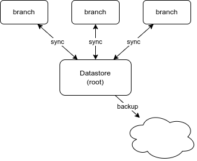

Scaling the RxServer
The RxDB Server run in JavaScript and JavaScript runs on a single process on the operating system. This can make the CPU performance limit to be the main bottleneck when serving requests to your users. To mitigate that problem, there are a wide range of methods to scale up the server so that it can serve more requests at the same time faster.
Vertical Scaling
Vertical Scaling aka "scaling up" has the goal to get more power out of a single server by utilizing more of the servers compute. Vertical scaling should be the first step when you decide it is time to scale.
Run multiple JavaScript processes
To utilize more compute power of your server, the first step is to scale vertically by running the RxDB server on multiple processes in parallel.
RxDB itself is already build to support multiInstance-usage on the client, like when the user has opened multiple browser tabs at once. The same method works also on the server side in Node.js. You can spawn multiple JavaScript processes that use the same RxDatabase and the instances will automatically communicate with each other and distribute their data and events with the BroadcastChannel.
By default the multiInstance param is set to true when calling createRxDatabase(), so you do not have to change anything. To make all processes accessible through the same endpoint, you can put a load-balancer like nginx in front of them.
Using workers to split up the load
Another way to increases the server capacity is to put the storage into a Worker thread so that the "main" thread with the webserver can handle more requests. This might be easier to set up compared to using multiple JavaScript processes and a load balancer.
Use an in-memory storage at the user facing level
Another way to serve more requests to your end users, is to use an in-memory storage that has the best read- and write performance. It outperforms persistent storages by a factor of 10x. So instead of directly serving requests from the persistence layer, you add an in-memory layer on top of that. You could either do a replication from your memory database to the persistent one, or you use the memory mapped storage which has this build in.
import { getRxStorageMemory } from 'rxdb/plugins/storage-memory';
import { replicateRxCollection } from 'rxdb/plugins/replication';
import { getRxStorageFilesystemNode } from 'rxdb-premium/plugins/storage-filesystem-node';
import { getMemoryMappedRxStorage } from 'rxdb-premium/plugins/storage-memory-mapped';
const myRxDatabase = await createRxDatabase({
name: 'mydb',
storage: getMemoryMappedRxStorage({
storage: getRxStorageFilesystemNode({
basePath: path.join(__dirname, 'my-database-folder')
})
})
});
await myDatabase.addCollections({/* ... */});
const myServer = await startRxServer({
database: myRxDatabase,
port: 443
});But notice that you have to check your persistence requirements. When a write happens to the memory layer and the server crashes while it has not persisted, in rare cases the write operation might get lost. You can remove that risk by setting awaitWritePersistence: true on the memory mapped storage settings.
Horizontal Scaling
To scale the RxDB Server above a single physical hardware unit, there are different solutions where the decision depends on the exact use case.
Single Datastore with multiple branches
The most common way to use multiple servers with RxDB is to split up the server into a tree with a root "datastore" and multiple "branches". The datastore contains the persisted data and only servers as a replication endpoint for the branches. The branches themself will replicate data to and from the datastore and server requests to the end users. This is mostly useful on read-heavy applications because reads will directly run on the branches without ever reaching the main datastore and you can always add more branches to scale up. Even adding additional layers of "datastores" is possible so the tree can grow (or shrink) with the demand.

Moving the branches to "the edge"
Instead of running the "branches" of the tree on the same physical location as the datastore, it often makes sense to move the branches into a datacenter near the end users. Because the RxDB replication algorithm is made to work with slow and even partially offline users, using it for physically separated servers will work the same way. Latency is not that important because writes and reads will not decrease performance by blocking each other and the replication can run in the background without blocking other servers during transaction.
Replicate Databases for Microservices
If your application is build with a microservice architecture and your microservices are also build in Node.js, you can scale the database horizontally by moving the database into the microservices and use the RxDB replication to do a realtime sync between the microservices and a main "datastore" server. The "datastore" server would then only handle the replication requests or do some additional things like logging or backups. The compute for reads and writes will then mainly be done on the microservices themself. This simplifies setting up more and more microservices without decreasing the performance of the whole system.
Use a self-scaling RxStorage
An alternative to scaling up the RxDB servers themself, you can also switch to a RxStorage which scales up internally. For example the FoundationDB storage or MongoDB can work on top of a cluster that can increase load by adding more servers to itself. With that you can always add more Node.js RxDB processes that connect to the same cluster and server requests from it.